Koshu
Koshu · Yamanashi
Koshu
Highlighted on the Yamanashi map.
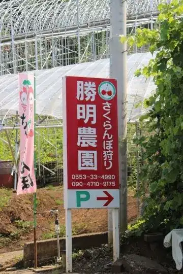
Stay
笛吹川温泉 坐忘
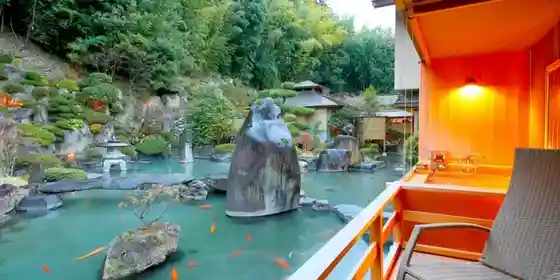
Usui Kawa Onsen Zabo
Inn at Usuikawa Onsen in Enzanmikkaichiba, Koshu.
STAY366
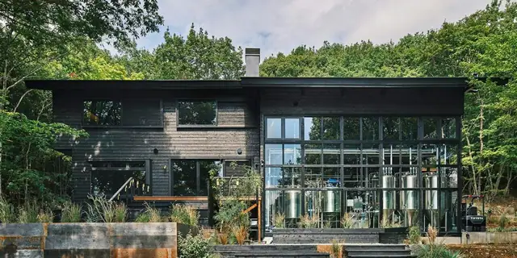
STAY366
古民家宿るうふ 蔦之家
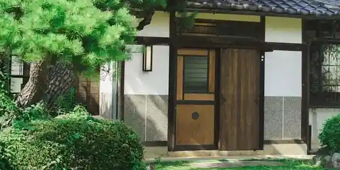
Ko Minka Yadoru Ufu Tsuta Yuki Ie
Inn in Katsunuma, Koshu with a renovated traditional house.
中村屋旅館
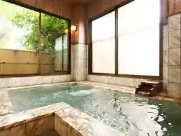
Nakamuraya Ryokan
Ryokan inn at Zunaburusato Onsen in Enzanueoso, Koshu.
塩山温泉 旅館ゆばた
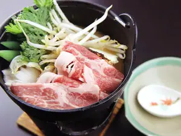
Enzan Onsen Ryokan Yubata
Ryokan inn at Enzan Onsen in Enzanueoso, Koshu.
望月庵
Mochizuki Iori
勝沼ぶどう郷ユースホステル
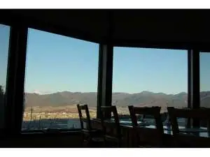
Katsunuma Budo Sato Yusuhosuteru
ひとつぶの葡萄
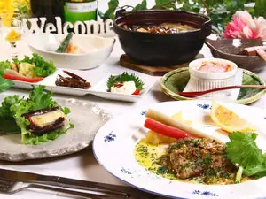
Hitotsubuno Budo
果実の見える宿
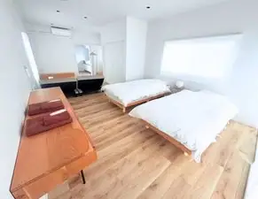
Kajitsu No Mie Ru Yado
Inn in Katsunuma, Koshu with pet-friendly rooms.
ワインの宿東夢
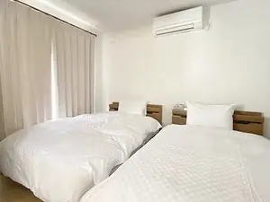
Wine No Yado Higashi Yume
ワイン民宿鈴木園
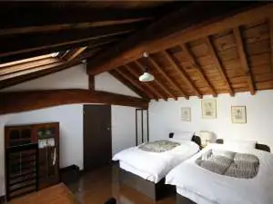
Wine Minshuku Suzuki Sono
Family-run minshuku in Katsunuma, Koshu with a renovated traditional house.
嵯峨塩鉱泉 嵯峨塩館
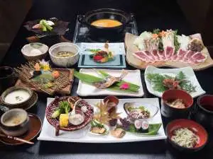
Saga Enko Izumi Saga Shio Kan
Dining
レストランテ 風
Restaurant Te Kaze
ビストロ・ミル・プランタン
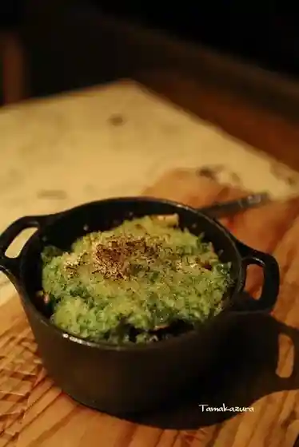
Bistro Miru Purantan
そば丸
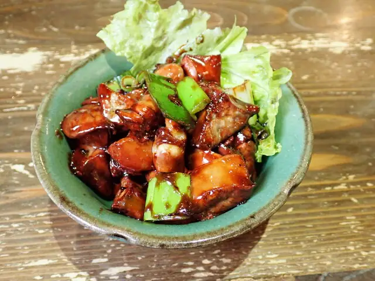
Soba Maru
皆吉
Minayoshi
甲州ほうとう 完熟屋 本店
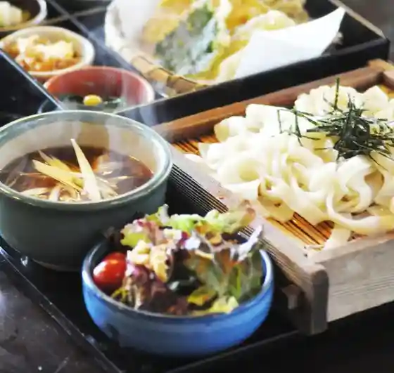
Koshu Hoto Kanjuku Ya Hon
平和園
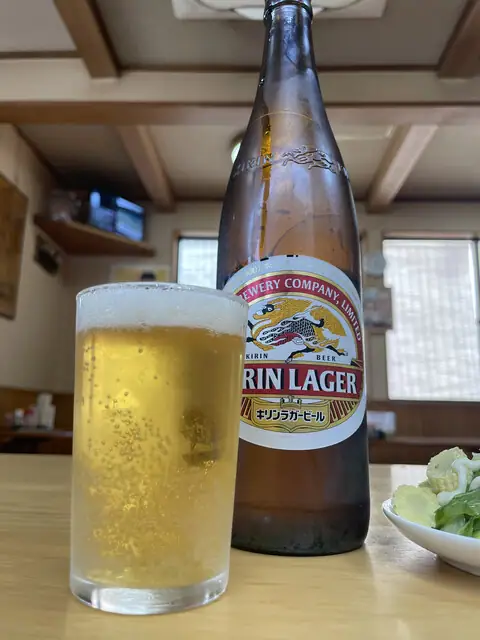
Heiwa Sono
ぶどうの丘 展望ワインレストラン
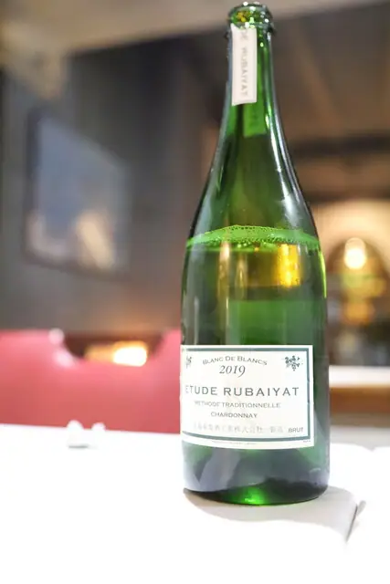
Budono Oka Tenbo Wine Restaurant
頑固おやじの手打ちほうとう
Ganko Oyajino Teuchi Chihoto
レストラン鳥居平
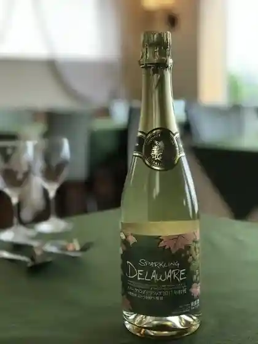
Restaurant Tori Taira
ほうとう処 いしはら
Hoto Tokoro Ishihara
パン工房鳥居平
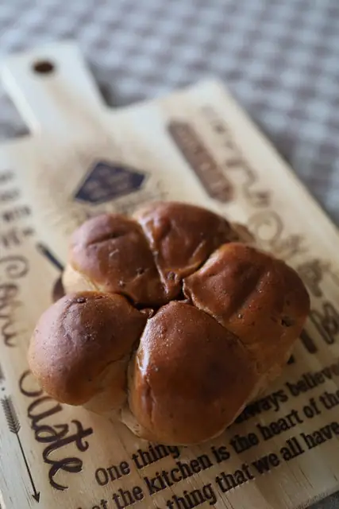
Bakery Kobo Tori Taira
98WINEs
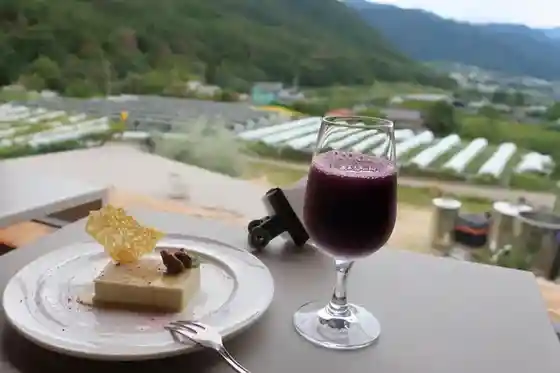
98WINEs
メルシャン ワインギャラリー
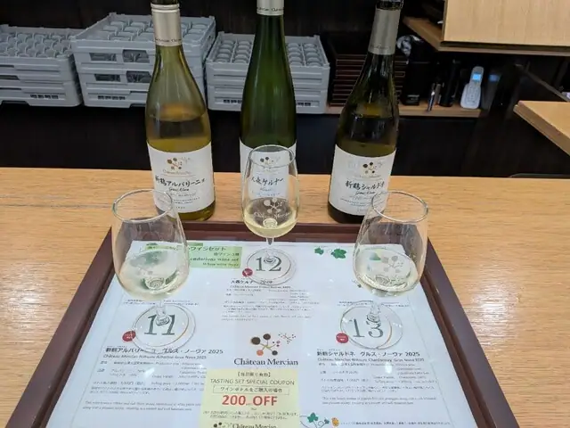
Merushan Wine Gyarari
IWAI TERRACE
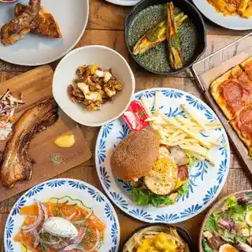
IWAI TERRACE
パンテーブル
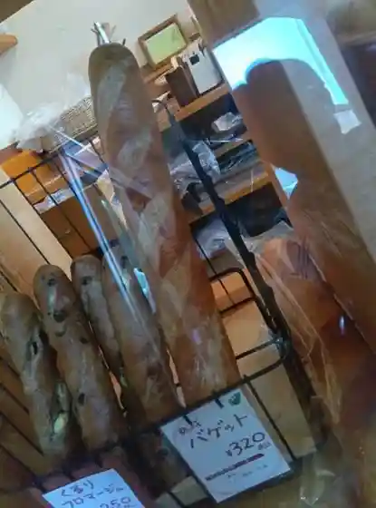
Bakery Teburu
ほうとう処 慶千庵
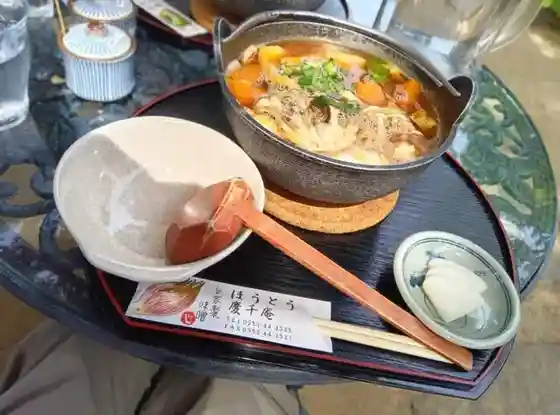
Hoto Tokoro Yoshi Sen Iori
塩山館食堂
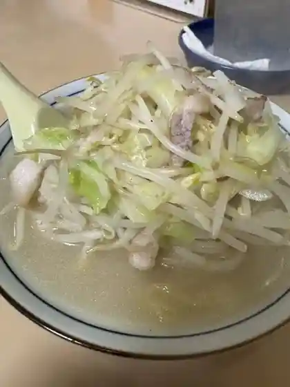
Enzan Kan Shokudo
信玄
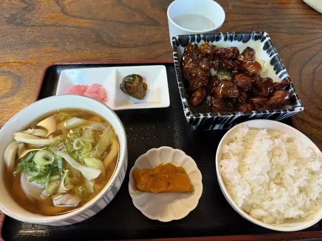
Shingen
味処 そばの実 【旧店名】惣菜村2248
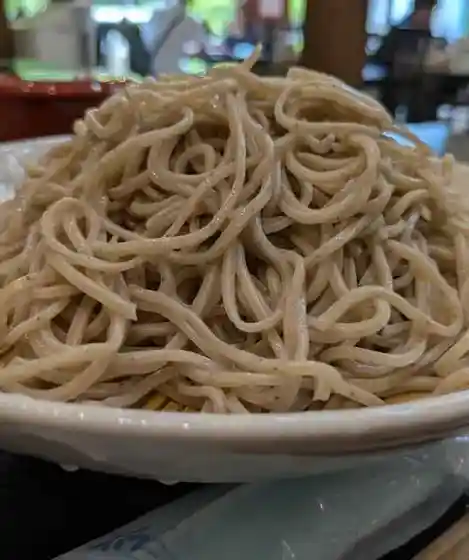
Ajidokoro Sobano Mi (Kyu Tenmei) Sozai Mura 2248
花藤
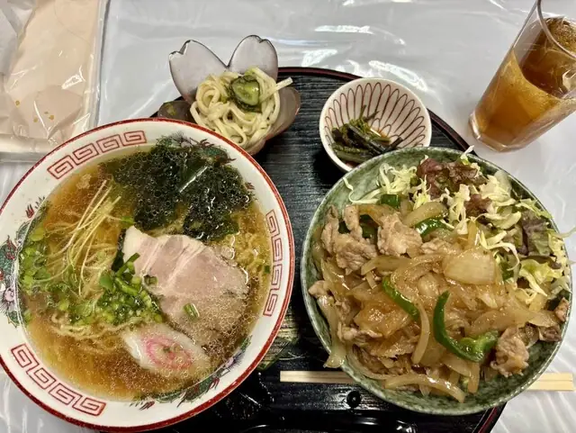
Hana Fuji
菊亭
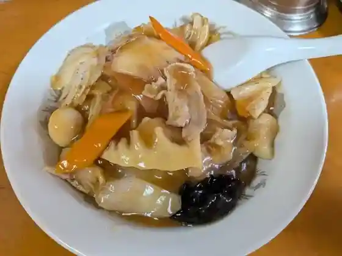
Kikutei
あかり食堂
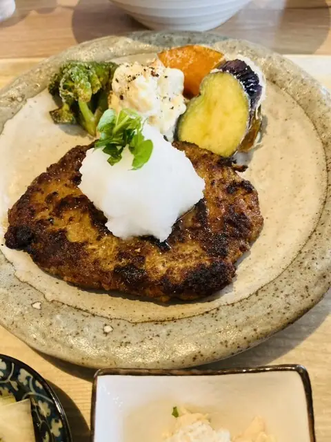
Akari Shokudo
山梨パン工房 モンマーロ
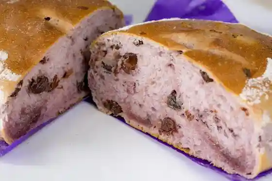
Yamanashi Bakery Kobo Monmaro
Nelk
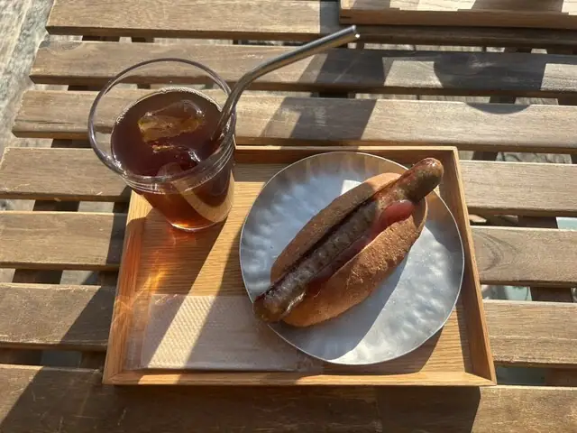
Nelk
Sights
Katsuaki Farm
Tama Sui En
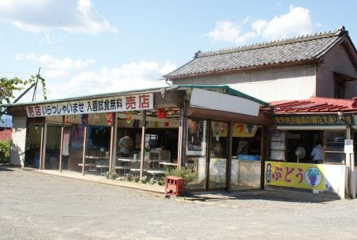
Katsunuma Kanko Center Sen Kaen
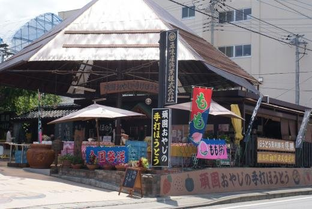
Kanamori Sono
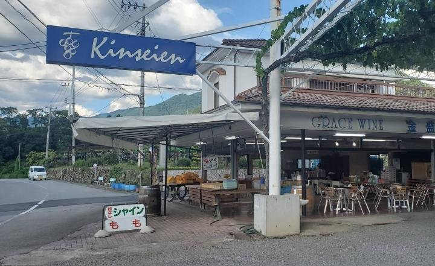
Kogyoku Sono
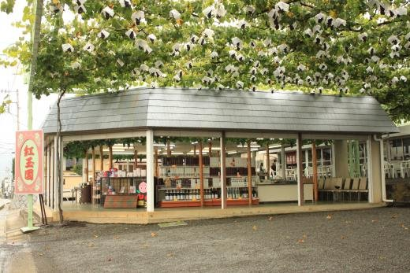
Akashiro Sono
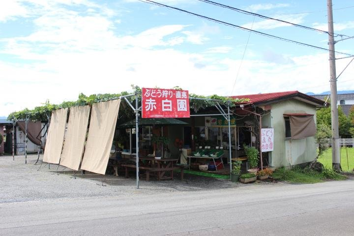
Otaki Yama
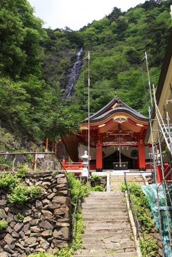
Oso Residence

This site is the Oso Residence.
Yunozawa Pass

From spring to autumn, flower fields appear, with first-class views of Kitadake and Yatsugatake.
Mt. Tokei (Mt. Kurokawa)
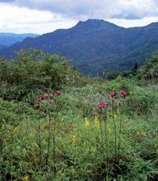
From Taba, its summit rocks resemble a cockscomb, with views of Fuji and the Alps.
Mount Koganezawa
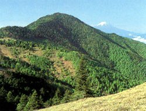
A Yamanashi 100 Famous Mountain on the Daibosatsu ridge, with fine views of Mount Fuji.
Mount Kasatori
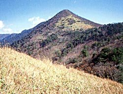
A gentle hat-shaped peak in the Yatsugatake-Chichibu range, whose southern slope holds the true source of the Tama River.
Koshu Mount Takao
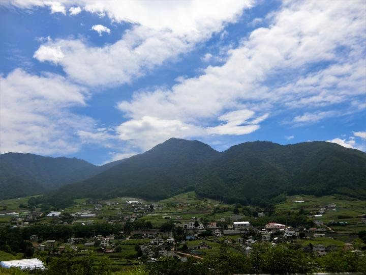
Koshu Mount Takao is a mountain.
Katsunuma Grape Country Station Plaza

About 1,000 Jinroku cherry trees overlook the Kofu Basin and are lit at night.
Mitsumori Farm
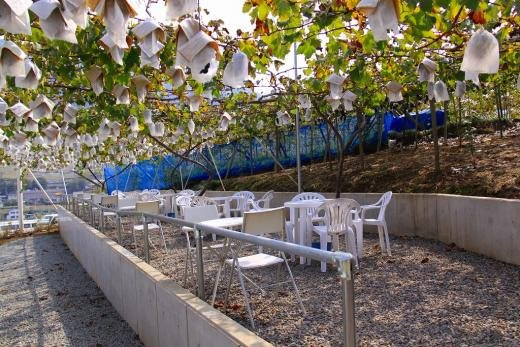
Daidai Sono
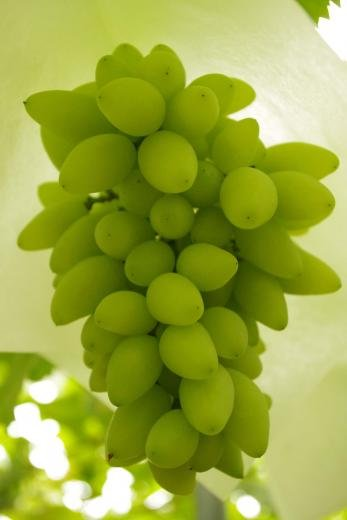
Sano Farm

Ho Tama Sono
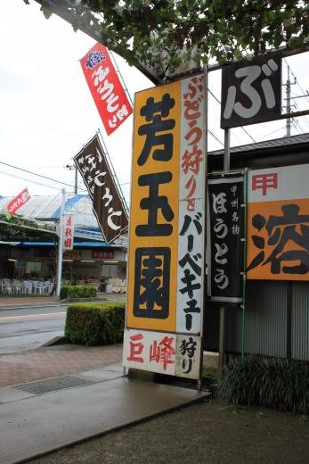
Okiya Shiki Sono
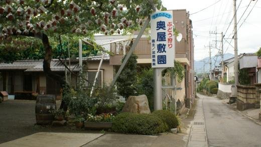
Marusan Farm
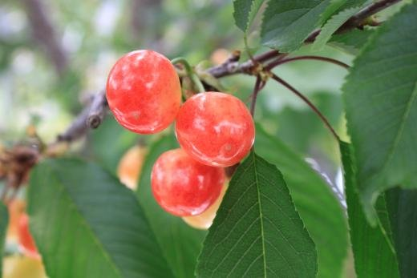
Hosaka Sono
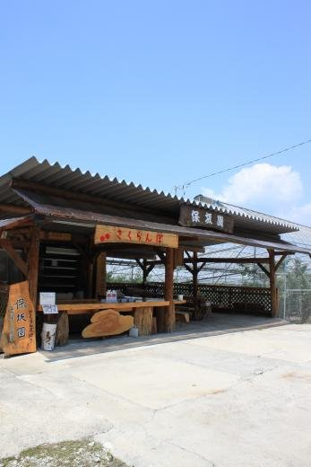
Katada Sono
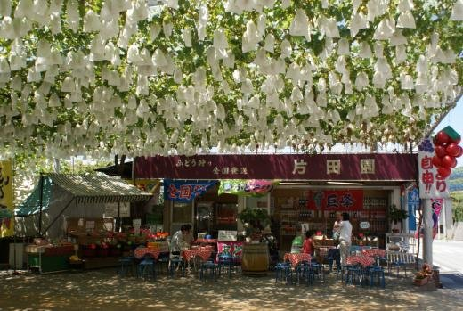
Mount Genjiro
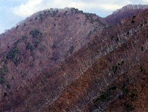
Mount Genjiro has Masuishi rock, said to mark Genjiro's seppuku, and seasonal Fuji views.
Mount Tanayokote
A Yamanashi 100 famous mountain whose ridge views include Yatsugatake and Mount Fuji.
Daibosatsu Pass
Daibosatsu Pass is a mountain pass.
Otoko Falls and Onna Falls
Otoko Falls and Onna Falls are two waterfalls.
Hikawa Valley Ryumon Gorge
Ryumon Gorge has clear streams, waterfalls, spring azaleas, and autumn leaves.
Kumano Shrine
Founded in 807, both halls are Important Cultural Properties, and Shingen aided the worship hall's rebuilding.
Mount Daibosatsu
A mountain called Daibosatsu.
Katsunuma Gure Park
Jiyu Sono
Tomo Shuen
Ichi Ko Sono
Kunugi Sono
Narudo Sono
Sakamoto Sono
Furutsuhausu Kachi Kaen
Sakamoto Budo Kari Sono
Ko Kaen
Tomitake Sono
Riso Sono
Tsuji Toyotama Sono
Katsunuma Sono
Misawa Orchard
Grape picking is all-you-can-eat, including Kyoho, Pione, Neo Muscat, and Delaware.
Ko Hisashi Sono
Shin Tama Sono
Mikado Sono
Seiho Sono
Yamaka Orchard
Yamaka Orchard is an orchard.
Miharashi no Sen Kaen
Akasaka-en Garden
Akasaka-en Garden is a garden.
Oto Ya Uchida Sono

Sakura Marutomo Farm
Shukuzawa Furutsu Farm
Kai Ko Sono
Otama Sakurambo Kari Furu Ru Sono
Wakao Orchard
This family-run tourist orchard has an on-site winery and offers grape picking from August.
Kirari Sono
Kanko Budo Sono Ko Kashiwa Sono
Uchida Fruit Orchard
Uchida Fruit Orchard is a fruit farm.
Piinekkuochado
Tomo-chan Garden

This site is Tomo-chan Garden.
Katsunuma No. 1 Vineyard
Katsunuma No. 1 Vineyard is a vineyard.
Grape Garden Anzen Farm
This Katsunuma eco-farmer farm grows and directly sells its own grapes.
Koshien Orchard
Visitors can taste many grapes, including Kyoho, Pione, and Shine Muscat.
Keikoen
Keikoen is a garden.
Chateau Katsunuma
Founded in early Meiji as Imamura Wine Brewery, this chateau stands in Toriibira.
Asunaro Orchard
This Katsunuma orchard offers all-you-can-eat grape, cherry, strawberry, and peach picking.
Hakusan Sono
Fukujuen Garden
Fukujuen Garden is a garden.
Katsunuma Check Dam
Katsunuma Check Dam, built from 1915 to 1917, uses carved bedrock and resembles a natural waterfall.
Katsunuma Tunnel Wine Cave
This 1903 former railway tunnel stores about one million wine bottles and allows entrance visits.
Keitoku-in Temple
Tokugawa Ieyasu founded this memorial temple for Takeda Katsuyori where the clan fell in 1582.
Kogaku-ji Temple
Kogaku-ji Temple is a Buddhist temple.
Cherry Blossoms around JR Kai-Yamato Station
Cherry blossoms are found around JR Kai-Yamato Station.
Tamamiya Skunk Cabbage Park
Tamamiya Skunk Cabbage Park is a park.
Mitsukubo Plateau
Mitsukubo Plateau is a plateau.
Oiran Fuchi Shuhen no Autumn Leaves
Kamihikawa Pass Area
The surroundings of Kamihikawa Pass.
Hyakkaen
Hyakkaen is a fruit garden.
Grape Workshop Wine Glass Hall
This Katsunuma shop sells worldwide wine glasses, local wine, and glass-making.
Yakataen Grape Orchard

Yakataen Grape Orchard is a grape orchard in Yamanashi.
Katsunuma Grape Hill
A grape-and-wine sanctuary atop a vineyard hill, with about 200 recommended wines in a cave.
Hoko-ji Temple
Known as the flower temple, blossoms fill the grounds from early spring to late autumn.
Sugeta Tenjin Shrine
Said to have been built in 842 by Fujiwara no Iseo, later enshrining Sugawara no Michizane.
Ushioku View Hill
A rest area overlooking the Kofu Basin, with seasonal scenery and nighttime views.
Enzan Peach Blossom Land
Enzan Peach Blossom Land is an area in Enzan.
Daizen-ji Temple
Founded in 718 and nicknamed the Grape Temple, its Yakushi Hall is a National Treasure.
Shingen Hall

Shingen Hall is a facility known by the name Shingen.
Former Takano Family Residence
The former Takano family residence is in Yamanashi.
Former Tanaka Bank Museum
The Former Tanaka Bank Museum is a museum in a former bank.
Miyakoen Modern Industrial Heritage
A modern industrial heritage site in Koshu City.
Katsunuma Shi Yakatato
Grape Country Culture Hall
A culture hall called Grape Country.
Ohinikage Tunnel Walking Trail
A walking trail at Ohinikage Tunnel.
Katsunuma Travel Diary Herb Garden
Service dogs, wheelchair ramps, infant facilities, accessible toilets, and an AED are available.
Fuji Clair Winery
It stands on high ground southeast of the Kofu Basin and makes Koshu-focused Japanese wine.
Roadside Station Kai-Yamato
This roadside station offers wheelchair access, baby facilities, rental wheelchairs, and an AED.
Enzan Fureai no Mori General Park
Mount Tenmoku Seiun-ji Temple
Seiun-ji is a temple on Mount Tenmoku.
Erin-ji Temple
Takeda Shingen's family temple holds his grave, treasures, seasonal scenery, and a noted garden.
Weeping Cherry at Jiun-ji Temple
This prefectural natural monument, an Edohigan weeping cherry, is said to be 300 years old.
Hikawa Gorge Leisure Center
Hikawa Gorge Leisure Center is a leisure facility.
Hosaka Orchard
Okuyama Ka Hisashi Sono
Amemiya Furutsu Farm

Shimamura Farm
Higuchi Momozono

Furutsu Garden Hosaka
Ame Takashi Sono
Hamaiba Sancho Byupointo
Miyahara Cherry Shop
Miyahara Cherry Shop is a cherry shop.
Ichinose Highland Campground
Ichinose Highland Campground is a highland campground.
Katsunuma Budo Sato Ekimae Plaza
Budobatake
Uminuma Vineyard
Uminuma Vineyard is a grape orchard.
Manns Wine Katsunuma Winery
Wheelchair access, automatic doors, rental wheelchairs, and an AED are provided.
Ryuta Orchard
The orchard pursues delicious cherries whose taste reflects the owner's devoted passion.
Komaen Vineyard
Komaen Vineyard is a vineyard.
Harashige Wine
Founded in 1924, this small winery produces about 50 kiloliters yearly from Koshu and other grapes.
Kai Winery
Established in 1986 in an 1834 sake-brewery storehouse, it makes crisp Koshu white wine.
Enzan Winery
It makes 20 wines using only grapes grown within Yamanashi Prefecture.
Yamato Wine
Founded in 1913, it makes wine from traditional Japanese grape varieties suited to local conditions.
Chateau Jun Co., Ltd.
JUN Group founded this winery in 1979; it is known for Millet painting labels.
Shirayuri Winery
Founded in 1938, this family winery grows its grapes and makes L'Orient wine.
Morita Koshu Winery
One of Katsunuma's largest wineries, nicknamed Shanmori and known for affordable authentic wine.
Katsunuma Winery
This small winery pursues high-quality wine expressing Yamanashi's terroir.
Kizan Wine Co., Ltd.
This small family winery in Enzan, Koshu, uses only grapes grown in eastern Yamanashi.
Hishiyama Central Winery
Tours and tastings are available by inquiry, featuring locally made Hishiyama Koshu.
Soryu Winery
The name comes from China's eastern guardian god, believed to bring good fortune.
Oizumi Winery
Oizumi Winery, 100 years old in 2002, makes wine only from locally grown Koshu grapes.
Honjo Wine
Founded in 1941 by 130 licensed brewers who grew grapes and made wine in Iwasaki.
Asaya Wine
Since 1921 it has made wine reflecting the local climate, and displays old tools.
Marusan Winery
A family winery with an attached tourist vineyard, growing grapes since the Edo period and making wine prewar.
Chateau Mercian Katsunuma Winery
This winery traces its roots to Japan's first private wine company, founded in 1877.
Marufuji Wine Co., Ltd.
Founded in Katsunuma in 1890, this four-generation Rubaiyat winery produces traditional dry Koshu.
Ikeda Winery
It aims for high-quality wine from fine grapes; tours and tastings need inquiry.
Diamond Winery
Local farmers began brewing wine here in 1939; Diamond Winery was incorporated in 1963.
Kurambon Wine
A Katsunuma winery using local grapes and natural cultivation to produce Koshu wines.
Okunoda Winery
Founded in 1962, this Koshu winery crafts wine emphasizing the grapes' natural flavor.
Ushioku Daiichi Wine
A small Enzan cooperative makes rare wine unavailable on the general market.
Chateraise Belleforet Katsunuma Winery
A winery owned by confectioner Chateraise that grows grapes and produces terroir-focused wines.
Maruki Winery
Japan's oldest existing winery, founded in 1891 and using sustainable vineyard methods.
Ichigobatake Nojo
Anzen Farm Shop No. 2
This is the second shop of Anzen Farm.
Ikkyuen
Located in central Katsunuma along Route 411, with about 10,000 tsubo on both sides.
Hououen Garden

Hououen Garden is a garden.
Kanehara Sono
Yamaichi Garden
Yamaichi Garden is a garden in Yamanashi.
Sasaki Garden
Sasaki Garden is a garden.
Countryside
This is a rural countryside area.
Ishihara Kanko Budo Sono
Budo Kari Iwasaki Sono
JA Fruit Yamanashi Katsunuma Direct Sales Shop
It sells local grapes, peaches, wine, juice, rice, hoto, and Shingen mochi.
Asahi Sono
Wakao Shu Farm
Kinkaen

Kinkaen is a fruit garden.
Keyaki Garden
Keyaki Garden is a garden.
Takami Garden

Takami Garden is a garden.
Torowa Sono
Hagi Hama Sono
Uematsu Sono
Hitoshi Kaen
Hojo Budo Sono
Katsunuma Drive-In Yamaguchi Garden

This site is Katsunuma Drive-In Yamaguchi Garden.
Furuya Farm
Taiga Sono
Chuoen Garden
A garden known as Chuoen.
Korakuen Garden
Korakuen Garden is a garden.
Kubota Garden
Kubota Garden is a garden.
Yamasa Farm
Yamasa Farm is a farm.
Hayakawa Orchard
Hayakawa Orchard is a fruit orchard.
Shogyoku-en Garden
Shogyoku-en Garden is a garden.
Kanai Sono
Ei Tama Sono
Uchida Farm
Uchida Farm is a farm.
Mishina Farm
A farm named Mishina.
Marua Orchard
Marua Orchard is a fruit orchard.
Kairakuen
Kairakuen is a pleasure garden.
Katsunuma Winery Market Nitta Store
Nitta Store operates at Katsunuma Winery Market.
Asunaro Orchard
This Katsunuma fruit farm offers all-you-can-eat grape, cherry, strawberry, and peach picking.